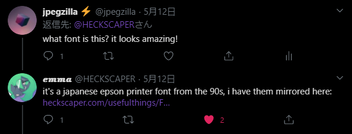
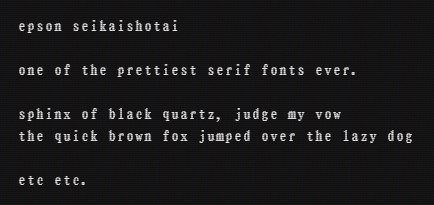
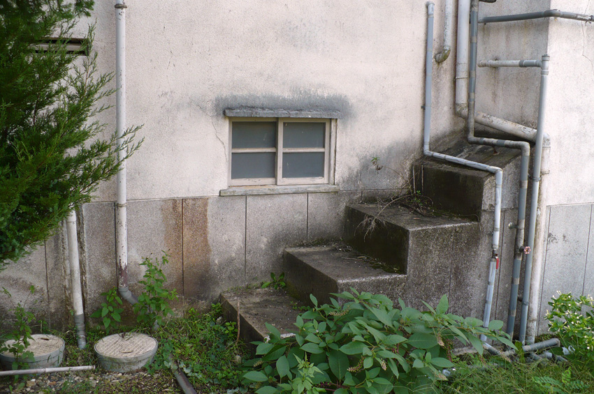

my favorite serif font yet.
I'm constantly looking for beautiful fonts to use. so, when a musician I really like posted this print (which also taught me about hyperart thomasson, more on that later), I was totally floored. the font was so gorgeous to me.
of course, I immediately asked what it was — and she graciously just handed it to me:
the font in action looks like this (this was captured from within minerva's akasha):

I later found it on the
official epson site
as well. it's called epson
hyperart thomasson.
so the other thing that I learned about from that tweet was the
concept of
hyperart thomasson. I highly recommend reading the wikipedia article if you're
interested, but here's the gist of it: hyperart thomasson is a
vestigial fragment of architecture or an environment. stairs that
lead to a door that no longer exists. a fence that doesn't appear to
contain anything. a bridge over a dry channel, and so on.

these things fascinate me to no end and have become a concrete
source of inspiration. thinking about what might have been there, or
thinking of new purposes for seemingly absurd and useless structures
is really fun for me. no matter how mundane, these things tell
stories — but the people who know the real stories are
probably mostly inaccessible to me. I may never know what the
staircase once lead to, but it's nice to imagine....
that's all I had to say for today. I'll be back soon! oh also, I
just finished writing my
thesis of web development
and I'd love to hear what you think about it, if you want to read
it. I'll write something else soon! see you later.
currently listening to:
- the museum of unnatural disasters by kitcaliber
- bells of new life by ken ishii
- freeze dry the pasts by bish (flashing light warning)
- sunny day!!! by tokage
- domino effect by ozma
-
hand crushed by a mallet - remix
by 100 gecs
flashing everything warning)